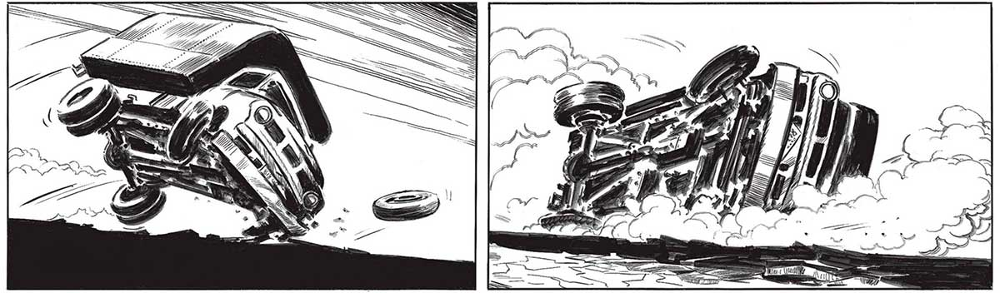
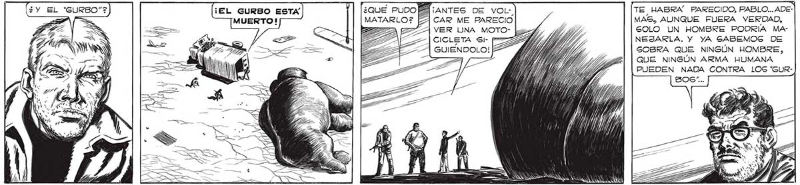
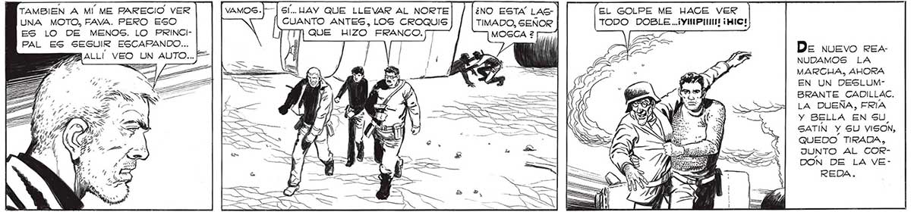

PERO... ESTOY “GROGGY”. 299 7-7 ( ARAS AN o “Wa CAE > ¿Y EL 'GURBO”? ¿QUE PUDO PA ¡ANTES DE voL- TE HABRA PARECIDO, PABLO... ADEMATARLO? A CAR ME PARECIO MAS, AUNQUE FUERA VERDAD, : VER UNA MOTO: Lz4b, df, SOLO UN HOMBRE PODRÍA MACICLETA Si- p Y NEJARLA. Y YA GABEMOG DE GUIENDOLO! SOBRA QUE NINGÚN HOMBRE, QUE NINGÚN ARMA HUMANA PUEDEN NADA CONTRA LOS “GURNES Ml E == E => ERA UA TAMBIEN A MÍ ME PARECIO VER UNA MOTO, FAVA. PERO ESO ES LO DE MENOS. LO PRINCIPAL ES SEGUIR ESCAPANDO... BPAALLÍ VEO UN AUTO... F G/... HAY QUE LLEVAR AL NORTE ¿NO ESTA LAG> | CUANTO ANTES, LOS CROQUIS TM QUE HIZO FRANCO. EL GOLPE ME HACE VER TIMADO, SEÑOR TODO DOBLE..iYIMPIII ¡MIC! De nuevo REA NUDAMOS LA MARGA, AHORA EN UN DESLUMBRANTE CADILLAC. sx Ma : ) Y, SÍ pa U ok Ñ LA DUEÑA, FRIA Y BELLA EN SU, SATIN Y SU VISON, QUEDO TIRADA, JUNTO AL CORDON DE LA VEREDA.


